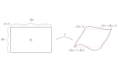

Mat3teden4
Table of Contents
Dokaz trditve where Dragi tells a joke.
\( V(B) = 0 \iff S(\chi_B) = 0 \)
Definicija \( S(\chi_B) = \inf_D S(\chi_B, D) \) \( \iff \) \( \forall \varepsilon > 0 \ \exists D \) nekega kvadra \( K \supset B \ \ni: \)
\begin{align*} S(\chi_B, D) & < \varepsilon \\ \sum\limits_{Q \in D} \left| Q \right| \sup_Q \chi_B &= \sum\limits_{Q\in D} \left| Q \right| \end{align*}saj je \( S(\chi_B)i \in {0, 1} \) in \( Q \) seka \( B \).
\[ {K_1, \ldots K_m} := \bigcup {Q \in D, Q \text{ seka } B} \supset B \]
1. Riemann-Darbouxov integral
1.1. Integracija po omejenih množicav v \( \mathbb{R}^{n} \)
1.1.1. Definicija 2.11. (p.S.)
Pravimo, da lastnost \( L \) velja skoraj povsod na množici \( X \in \mathbb{R}^n \), če velja povsod razen morda na množici z mero 0. To je, če je
\[ m(\{x \in X, L \text{ v točki } x \text{ ne velja }\}) \]
Primeri so:
- \( f = g \text{ s.p. } x \in X: \quad m (\{x \in X, f(x) \not = g(x) \}) = 0 \)
- \( X_{\mathbb{Q}} = 0 \text{ s. p. } \mathbb{R} \)
1.1.2. Izrek (Lebesque)
Naj bo \( f: K \to \mathbb{R} \) omejena. Tedaj je \( f \) integrabilna \( \iff \) množica nezveznosti \( f \) ima mero 0.
Error 404: dokaz not found
1.1.3. Posledica
Če je \( A \subset \mathbb{R}^n \) omejena, tedaj
\[ V(A) = \int\limits \chi_A\,dx \ \exists \ \iff \chi_A \text{ zvezna s. p. } \iff m(\partial A) = 0 \text{ množica nezveznosti } \chi_A \]
1.1.4. Trditev
Če je \( A \) kompaktna, tedaj
\[ V(A) = 0 \ \iff \ m(A) = 0 \]
Dokaz:
\( \Leftarrow \) velja že brez kompaktnosti
Domača naloga je dokaz!
1.1.5. Lastnosti integrabilnih funkcij
Oznaka za \( A \subset \mathbb{R}^n \) omejena, pišimo \( I(A) = \{ f:A \to \mathbb{R}, f \text{ integrabilna na } A \} \)
\( f, g \in I(A) \implies f + g \in I(A) \) in \( \int\limits_A (f+g) \,dx = \int\limits_A f\,dx + \int\limits_A g\,dx\)
in
\( c\in \mathbb{R} \implies \ cf \in I(A) \) in \( \int\limits_A cf \,dx =c \int\limits_A f\,dx\)
- \( f, g \in I(A), \ f \le g \text{ na } A \implies \int\limits_A f \,dx \le \int\limits_A g\,dx\)
- \( f\in I(A) \implies \left| f \right| \in I(A) \) in \( \left| \int\limits_A f\,dx \right| \le \int\limits_A \left| f \right|\,dx \)
- \( f\in I(A) \text{ in } V(A) \exists \implies \ \int\limits_A \left| f \right|\,dx \le \sup_A \left| f \right| \cdot V(A) \)
\( A_1, A_2 \subset \mathbb{R}^n \) omejena s predpostavkami
\( V(A_1 \cap A_2) = 0 \) in \( f: A_1 \cup A_2 \to \mathbb{R} \) omejena in \( f\in I(A_1) \cap I(A_2) \) iz česar sledi
\( f\in I(A_1 \cup A_2) \text{ in } \int\limits_{A_1 \cup A_2} f \,dx = \int\limits_{A_1} f \,dx + \int\limits_{A_2} f\,dx\)
1.1.6. Trditev
Naj bo \( K \subset \mathbb{R}^n \) kvader in \( f: K \to [0, \infty) \) omejena. Tedaj velja
\[ \int\limits_K f \,dx = 0 \ \implies \ f = 0 \text{ s.p. } K \]
Dokaz:
Za \( n \in N \) definiramo
\[ K_n := \{ x\in K; \ f(x) \ge \frac{1}{n} \} = f^{-1} ([\frac{1}{n}, \infty ]) \]
Velja \( 0 \le \chi_{K_n} \le nf \) povsod na \( K \), saj je \( f \ge 0 \) . Sledi
\[ 0 \le S(\chi_{K_n}, D) \le S(nf, D) = n S(f, D) \ \forall \text{ delitev } D \text{ kvadra } K \]
iz tega sledi
\[ 0 \le S(\chi_{K_n}) \le n \cdot S(f) = 0 \]
kjer smo privzeli, da \( \int\limits_K f\,dx = 0\).
Sledi \( S(\chi_{K_n}) = 0 \)
Od prej že vemo \( \int\limits_K \chi_{K_n} \,dx = \int\limits_{K_n} 1 \,dx = 0 \)
Sledi \( V(K_n) \ \exists \) in je enako 0, kar potem pomeni \( m(K_n) = 0\ \forall n\in \mathbb{N}\) in še dodatno \( m(\{f \not = 0\}) = m(\bigcup_{n \in \mathbb{N}} K_n) = 0 \)
Q.E.D.
1.2. Izračunavanje integralov
Prehajamo iz vprašanj, ali integrali obstajajo, na to, kako jih izračunamo.
A user may note, da se veliko sprašujemo, ali integrali obstajajo, ali so definirani, in kako jih izračunati. Nikoli pa se ne vprašamo kako so integrali.
1.2.1. Izrek (Fubini-Tonelli) 2.20 (p.S.)
Tukaj že prej omenjeni Fubini-Tonelli povežemo z večdimenzijskimi prostori.
Naj bo \( f: [a, b] \times [c, d] \to \mathbb{R} \) integrabilna. Privzamemo, da je \( \forall x \in [a, b] \) funkcija \( f(x, \cdot ): [c, d] \to \mathbb{R}, \ y \mapsto f(x, y) \) (torej \( x \) je fiksen, druga spremenljivka pa ni) definirana kot integrabilna na \( [c, d] \). Tedaj je
\[ \iint\limits_{[a, b] \times [c, d] } f(x, y) \,dx dy = \int\limits_a^b \int\limits_c^d f(x, y) \,dy\,dx \]
Integral na levi strani je dvojni integral (Riemann-Darbouxov integral funkcije dveh spremenljivk), integral na desni pa je iterirani integral (tudi dvakratni) in je “zaporedje” dveh integralov ene spremenljivke.
1.2.2. Posledica 2.21 (p.S.)
Če je \( f:[a,b]\times [c, d] \to \mathbb{R} \) zvezna. Tedaj je
\[ \iint\limits_{[a, b] \times [c, d]} f(x, y) \,dx dy = \int\limits_a^b \int\limits_c^d f(x, y) \,dy\,dx = \int\limits_c^d \int\limits_a^b f(x, y)\,dx\,dy \]
Dokaz Fubinijevega izreka:
Za integrabilno \( f(x, \cdot) \) definiramo \( g:[a, b] \to \mathbb{R} \) s predpisom
\[ g(x) \int\limits_c^d f(x, y)\,dy \] , ki obstaja, ker je \( f \) integrabilna. Označimo \( I = [a, b], \ J = [c, d] \). želimo
\[ \iint\limits_{I \times J} f(x, y)\,dx dy = \int\limits_I g(x)\,dx \]
Izberemo delitvi
\begin{align*} D_1 &= \{ I_i = [x_{i-1}, x_i]; \ i = 1, \ldots m\} && \text{ za } I \\ D_2 &= \{J_j = [y_{j - 1}, y_j]; \ j = 1, \ldots n \} && \text{ za } J \end{align*}\( D_1 \) je projekcija na \( I \) in \( D_2 \) je projekcija na \( J \).
Tedaj je \( D_1 \times D_2 \) delitev za \( I \times J \). Označimo za \( P_{ij} = I_i \times J_j \)
\begin{align*} m_{ij}(f) &= \inf_{P_{ij}} f \\ M_{ij}(f) &= \sup_{P_{ij}} f \end{align*}Velja
\begin{equation} \label{eq:1} s(f, D) = \sum\limits_{i, j} m_{ij}(f) \left| P_{ij} \right| = \sum\limits_i \left( \sum\limits_j m_{ij}(f) \left| J_j \right| \right) \left| I_i \right| \end{equation}saj je \( \left| P_{ij} \right| = \left| I_i \right| \cdot \left| J_j \right| \). Zadnjo vsoto želimo povezati z Darbouxovo vsoto funkcije \( g \).
Izberemo \( i \in \{i, \ldots, m\} \) in \( x \in I_i \). Tedaj je
\[ m_{ij}(f) = \inf_{\xi \in I_i, \ y_j \in J_j} f(\xi, y) \le \sup_{y\in J_j} f(x, y) \]
Sledi iz \ref{eq:1}
\begin{align*} &= \sum\limits_j m_{ij}(f) \left| J_j \right| \le \sum\limits_j m_{ij}(f(x, \cdot)) \left| J_j \right| = s(f(x, \dot), D_2)\\ & \le \int\limits_c^d f(x, y)\,dy \end{align*}Iz tega potem sledi, da je
\[ \iint_{I \times J} f(x, y) \, dx dy = \int\limits_I g(x)\,dx = g(x) \quad \forall i, \ \forall x \in I_i \]
Nadaljno
je vsota iz \ref{eq:1}
\[ \sum\limits_j m_{ij}(f) \left| J_j \right| \le \inf_{x\in I_i} \forall i \]
in tako dobimo neenakost Darbouxovih vsot
\[ s(f, D) \le s(g, D_1) \]
Potrebno za zgornjo vsote. Torej
\[ s(f, D) \le s(g, D_1) \le S(g, D_1) \le S(f, D) \]
Ker je \( f \) integrabilna, \( \forall \varepsilon > 0 \ \exists D \ni \):
\[ S(f, D) - s(f, D) < \varepsilon \]
Torej za njuno projekcijo na 1. komponento \( (D_1) \) velja
\[ S(g, D_1) - s(g, D_1) < \varepsilon \]
Vidimo, da je torej
\[ s(f) = S(f) = s(g) = S(g) \]
Q.E.D. *
1.2.3. Primer 2.6 (p.S.)
\( P = [-1, 1] \times [-2, 2] \in \mathbb{R} ^2 \) in \( f(x, y) = 1 - \frac{x}{3} - \frac{x}{4} \)
\( I = \iint\limits _P f(x, y) \, dx dy \)
Ker je \( f \) zvezna, rečemo, da \( I \ \exists \). Uporabimo Fubinijev izrek, da ga izračunamo.
- \( P = [0, 1] \times [0, 1] \) in \( A = P \cup \{(x, y) \in \mathbb{R} ^2, \ y \le x\} \) za funkcijo \( g(x, y) = x \)
1.2.4. Trditev 2.23 (p.S.)
Naj bodo
- \( I = [a, b] \)
- \( \alpha, \beta: I \to \mathbb{R} \) zvezne in \( \alpha \le \beta \)
- \( A := \{(x, y) \in \mathbb{R} ^2, \ x \in I, \ y \in [\alpha(x), \beta(x)]\} \)
- \( f: A \to \mathbb{R} \) zvezna
Tedaj je
\[ \iint\limits_{A} f(x, y) \, dx dy = \int\limits_a^b \int\limits_{\alpha(x)}^{\beta(x)} f(x, y) \,dy\,dx \]
Dokaz:
Ker sta \( \alpha, \beta \) zvezni, sta na \( [a, b] \) omejeni, zato obstaja pravokotnik \( P \subset \mathbb{R}^2 \ \ni: \ A \subset P \). Definiramo \( \tilde{f}: A \to \mathbb{R} \ \ni \)
\[ \tilde{f} (x, y) = \begin{cases} f(x, y); (x, y) \in A \\ 0; \text{ sicer } \end{cases} \]
oz. \( \tilde{f} = f \chi_{A} \)
Točke nezveznosti funkcije \( \tilde{f} \) so vsebovane v grafih funkcije \( \alpha \) in \( \beta \): \( \Gamma_{\alpha} \cup \Gamma_{\beta} \). Vemo, da imata grafa prostornino 0 v \( \mathbb{R}^2 \)torej jo ima tudi unija teh dveh grafov. Poslediċno je \( \tilde{f} \) zvezna s.p. \( P \), zato je integrabilna na \( P \).
( \( \{\text{ nezveznosti } \tilde{f} \} \subset \Gamma_{\alpha} \cup \Gamma_{\beta} \) in ima prostornino 0)
\begin{align*} \iint\limits_A f(x, y) \, dx \, dy &= \iint\limits_P \tilde{f}(x, y) \, dx \,dy \\ &\stackrel{F.T.}{=} \int\limits_{a}^{b} \left( \int\limits_c^d \tilde{f} (x, y)\,dy \right) = \int\limits_a^b \int\limits_{\alpha(x)}^{\beta(x)}f(x, y) \,dy\,dx \end{align*}Upoštevamo \( \forall x \in [a, b] \) je \( \tilde{f}(x, \cdot) \) odsekoma zvezna na \( [c, d] \), zato je integrabilna.
\[ \int\limits_c^d \tilde{f} (x, \cdot) \,dx = \int\limits_c^{\alpha(x)} 0 \,dx + \int\limits_{\alpha(x)}^{\beta(x)}\,dx = \int\limits_{\beta(x)}^{d} 0 \,dx \]
Q.E.D.
1.2.5. Primer 2.7 (p.S.)
1.3. Posplošitev na višje dimenzije
1.3.1. Izrek 2.24 (p.S.)
- \( A \subset \mathbb{R}^n, \ B \subset \mathbb{R}^n \) kvadra
- \( f:A \times B \to \mathbb{R} \) integrabilna
\( f(x, \cdot) \) integrabilna na \( B \ \forall x \in A\)
iz česar sledi
\[ \iint\limits_{A\times B} f \, dx \, dy = \int\limits_A \left( \int\limits_B f(x, y) \,dx \right)\,dx \]
1.3.2. Trojni integral
\( F: K = [a, b] \times [c, d] \times [e, f] \to \mathbb{R}] \) zvezna
\[ \iiint\limits_K F(x, y, z) = \iint\limits_{[a, b] \times [c, d]} \left( \int\limits_e^f\,dx( F(x, y, z) \, dz \right) \, dx \, dy = \int\limits_a^b \left( \int\limits_c^d \left( \int\limits_e^f F(x, y, z) \,dz \right)\,dy \right)\,dx \]
1.3.3. Trditev
- \( A\subset \mathbb{R} ^2 \) ima ploščino
- \( \alpha, \beta: A \to \mathbb{R} \) zvezna in \( \alpha < \beta \)
- \( B := \{(x, y, z), \in A \times \mathbb{R}, \alpha(x, y) \le y \le \beta(x, y) \} \)
- \( f: B \to \mathbb{R} \) je zvezna
\[ \iiint\limits_B f(x, y, z) \, dV = \iint\limits_A \left( \int_{\alpha(x, y)}^{\beta(x, y)} f(x, y, z) \, dz \right) \, dy \, dx \]
1.3.4. Primer 2.8 (p.S.) -ish
- \( \iiint_{[0, 1] \times [-1, 1] \times [2, 5]} (x + y + z) \, dx \, dy \, dz = \int\limits_0^1 \int\limits_{-1}^1 \int\limits_2^5 (x + y + z)\,dz\,dy\,dx \) Dragi je vzel primer 2.8 (p.S.) in ker so mu bile dane številke dolgočasne, jih je spremenil. Izračunaj sam.
Naj bo \( T \) tetraeder z oglišči \( (0, 0, 0), \ (1, 0, 0), \ (0, 1, 0), \ (0, 0, 1) \). \[ \iiint\limits_T f(x, y, z) \, dV = \iint\limits_A \left( \int\limits_0^{1 - x - y} f(x, y, z) \,dz \right) \, dx \, dy \]
Za razliko o navadnih stvari, je tokrat funkcija \( f(x, y, z) \) prepuščena bralcu in ne dokaz.
1.4. Uvedba nove spremenljivke 2024/10/23
v 1D integralu.
Spomnimo se, da se nova spremenljivka uvede kot
\[ \int\limits_a^b f(x) \,dx = \int\limits_{\varphi^{-1} (a)}^{ \varphi^{-1}(b)} f(\varphi(t)) \cdot \varphi' (t)\,dt \]
Vidimo, da se integracijsko območje in ostale stvari spremenijo
\begin{align*} I = [a, b] &\rightarrow [\varphi^{-1} (a), \varphi^{-1} (b)] \\ f &\rightarrow f \circ \varphi \cdot \varphi ' = g \\ \int\limits_I f(x) \,dx = \int\limits_J g(t)\,dt \end{align*}1.4.1. Definicija 2.15 (p.S.)
Naj bo \( U^{\text{odp}} \subset \mathbb{R}^n \) in \( \varphi_1, \ldots \varphi_m: U \to \mathbb{R} \) parcialno odvedljiva na vse spremenljivke. Jacobijevo matriko za \( \varphi := (\varphi_1, \ldots \varphi_m) \) definiramo kot
\[ J\varphi = \begin{bmatrix} \frac{\partial \varphi_1 }{\partial x_1} & \ldots & \frac{\partial \varphi_1 }{\partial x_m} \\ \vdots & \ddots & \vdots \\ \frac{\partial \varphi_m }{\partial x_1} & \ldots & \frac{\partial \varphi_m }{\partial x_m} \end{bmatrix} \]
1.4.2. Primeri za \( m = n \)
Za \( n = 1 \) in \( n = 2 \)
1.4.3. Polarne koordinate v \( \mathbb{R} ^2 \)
Definicija in Jakobijeva matrika.
1.4.4. Izrek 2.28 (p.S.)
Naj bo
- \( A \subset \mathbb{R}^n \) omejena množica s prostornino
- \( \varphi: A \to \mathbb{R}^n \) injektivna in razreda \( C^1 \)
- \( \det J\varphi (x) \not = 0 \ \forall x \in A \)
- \( x \mapsto \det J\varphi (x) \) omejena in različna od 0
- \( \varphi(A) \) je odprta v \( \mathbb{R}^n \) s prostornino
- \( f \varphi(A) \to \mathbb{R} \) integrabilna
Tedaj je tudi \( x \mapsto f(\varphi(x)) \left| \det J\varphi(x) \right| \) integrabilna na \( A \) in velja
\[ \int\limits_{\varphi(A)} \,dx = \int\limits_A f(\varphi(x)) \left| \det J\varphi(x) \right|\,dx \]
To je formula za uvedbo nove spremenljivke v večkratnih integralih.
(Skica) Dokaz (a):
Obravnavamo primer, ko je \( n = 2 \) in je \( A \) pravokotnik in \( f \) naj bo zvezna. Naj bo \( \{P_j\} \) neka delitev za naš pravokotnik \( A \). Velja
\[ \iint\limits_{\varphi(A)} f(x, y) \, dx \, dy = \sum\limits_j \iint\limits_{\varphi(P_j)} \]
Pri tej enakosti upoštevamo injektivnost.
Nadalje lahko zapišemo kot
\begin{align*} &= \sum\limits_j \left\langle f \right\rangle_{\varphi(P_j)} \left| \varphi(P_j) \right| \end{align*}kjer je \( \left\langle f \right\rangle_Q = \frac{1}{\left| Q \right|} \int\limits_Q f\,dx\) povprečje med \( f \) in \( Q \).
Velja prva ugotovitev:
\[ \left\langle f \right\rangle _{\varphi(P_j} = f(\varphi(u_j, v_j)) \]
za neke \( (u_j, v_j) \in P_j \)
in druga ugotovitev:

Naš pravokotnik se, ko je dovolj majhno slika v paralelogram.
Velja, da je \( \left| \varphi(P_j) \right| \approx \left| \text{ paralelograma } \right|\).
\begin{align*} = \left| (\varphi(u + \Delta u, v) - \varphi(u, v)) \times (\varphi(u, v + \Delta v) - \varphi(u, v)) \right| &= \frac{\partial \varphi}{\partial u} (u, v) \Delta u \times \frac{\partial \varphi}{\partial v} (u, v) \Delta v \\ &= \left| \varphi_u \times \varphi_v \right| \Delta u \Delta v \\ &= \begin{vmatrix} (\varphi_1)_u & (\varphi_1)_v \\ (\varphi_2)_u & (\varphi_2)_v \end{vmatrix} = \left| \det J \varphi \right| \end{align*}Iz tega potem sledi, da je
\[ \iint\limits_{\varphi(A)} f(x, y) \, dx \, dy = \sum\limits_j f(\varphi(x, y)) \left| \det J \varphi(x, y) \right| \Delta u \Delta v \]
To je Riemannova vsota za funkcijo \( f \circ \varphi \left| \det J \varphi \right| \). \( \Delta u \Delta v \) je velikost delilnega pravokotnika za \( A \). Posledično v limiti dobimo
\[ \int\limits_A f \circ \varphi \left| \det J \varphi \right|\,dx = \int\limits_A f(\varphi(\xi, \eta)) \left| \det J \varphi (\xi, \eta) \right| \,d\xi \, d\eta \]
Q.E.D. -ish
Opomba:
\( \Lambda : \mathbb{R}^n \to \mathbb{R}^n \) linearna, kaj je potem \( J\Lambda = ? \).
Potem je definirana Jacobijeva matrika kot
\[ J \Lambda = \left[ \frac{\partial \Lambda_j}{\partial k} \right] \]
za \( \Lambda_j: \mathbb{R}^n \to \mathbb{R} \) linearna. \( \Lambda_j (x_1, \ldots x_n) = c_1^j x_1 + \ldots c_n^j x_k \) in to pomeni, da je odvod enak
\[ \frac{\partial \Lambda_j}{\partial x_k} = c_k^i \]
Kar pomeni, da je Jacobijeva matrika enaka \( J\Lambda = \left[ c_k^j \right] = \Lambda \).
1.4.5. Primer
Imamo vektorje
\begin{align*} v_1 &= (1, 1, 1) \\ v_2 &= (2, 3, 1) \\ v_3 &= (0, 1, 1) \end{align*}Volumen paralelipeda, ki ga natejujejo vektorji \( v_1, v_2, v_3 \).
Naj bodo \( v_1, v_2, v_3 \) standardni bazni vektorji. Velja \( T \hat{e}_j = \mathbf{v}_j \), če je
\[ T = \begin{bmatrix} 1 & 2 & 0 \\ 1 & 3 & 1 \\ 1 & 1 & 1 \end{bmatrix} \]
in \( P = T(K); \ K = [0,1] \times [0,1] \times [0, 1] \).
Definiramo \( P \) kot \( P = \{\sum\limits_{j = 1}^3 \lambda_j \mathbf{v}_j; \ \lambda_j \in [0, 1] \} \)
Ker velja \( T \hat{e}_j = \mathbf{v}_j \) je potem vsota v množici P enaka
\[ T(\sum\limits_j \lambda_j \hat{e}_j) = T (\{\sum\limits_{j = 1}^3\lambda_j \hat{e}_j; \ \lambda_j \in [0,1] \})= K \]
To pomeni, da je prostornina enaka
\begin{align*} V(P) &= \iiint\limits_P 1 \, \mathrm{dV} = \iiint\limits_{T(K)} 1 \, \mathrm{dV} \\ &= \iiint\limits_K 1 \left| \det JT \right| = \left| \det (T) \right| \iiint\limits_K 1 = \left| \det T \right| = 2 \end{align*}ker je \( V(K) = 1 \)
1.4.6. Primer - ploščina enotskega kroga
1.4.7. Cilindrične koordinate v \( \mathbb{R}^3 \)
V grobem: polarne koordinate v \( \mathbb{R} ^2 \times (\text{ kartezične v } \mathbb{R}) \).
\begin{align*} x &= r \cos \varphi \\ y &= r \sin \varphi \\ z &= z \end{align*}Zakaj so cilindrične? Ker se bolje sliši kot polravninske. To je moj ad hoc odgovor na to vprašanje.
Lp in lep pozdrav, Dragi.
Jacobijeva matrika je \( \left| \det J \varphi \right| = r\)
1.4.8. Primer
Vzamemo \( 0 < \rho \le R \). Naj bo \( \Omega \subset \mathbb{R}^3 \) območje omejeno z
\begin{align*} x ^2 + y ^2 + z ^2 &= R ^2 \\ x ^2 + y ^2 &= \rho ^2 \end{align*}Natančneje leži znotraj krogle in valja.
Zanima nas \( V (\Omega) \), kar je presek krogle z radijem R in cilindra z radijem \( \rho \)
\begin{align*} V(\Omega) &= \iiint\limits_{\Omega} 1 \, \mathrm{dx} \, \mathrm{dy}\, \mathrm{dz} \\ &\stackrel{\text{cilindrične}}{=} \int\limits_0^{\pi} \int\limits_0^{\rho} \int\limits_{-\sqrt{R ^2 - r ^2}}^{\sqrt{R ^2 - r ^2}}r \, \mathrm{dz}\, \mathrm{dr}\, \mathrm{d}\varphi \\ &= \ldots = \frac{4 \pi R ^3}{3} \left( 1 - \left[ 1 - (\frac{\rho}{R}) ^2 \right] ^{\frac{3}{2}} \right)) \end{align*}